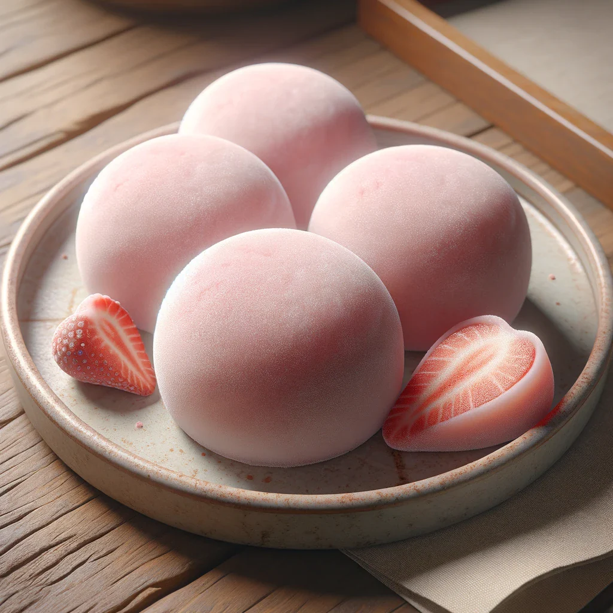

Asia Kitchen's Menu

Sushi
A renowned dish consisting of vinegared rice paired with various ingredients like raw fish, vegetables, and seaweed. Its delicate flavors and artistic presentation make it a staple in Japanese cuisine.
74.99$

Ramen
A beloved noodle soup dish, featuring chewy noodles served in a rich broth, topped with ingredients like sliced pork, green onions, and nori. Ramen is comfort food that varies greatly by region.
38.99$

Tempura
A light and crispy batter-fried dish, typically made with shrimp, fish, and seasonal vegetables. Tempura offers a deliciously crunchy texture and is often served with a dipping sauce for added flavor.
95.99$

Okonomiyaki
A savory Japanese pancake made with flour, eggs, shredded cabbage, and various ingredients. It's cooked on a griddle and topped with a variety of sauces, making it a popular street food.
75.99$

Mochi
A soft, chewy dessert made from glutinous rice, often filled with sweet red bean paste or ice cream. This delightful treat is enjoyed year-round, especially during festivals and special occasions.
83.99$